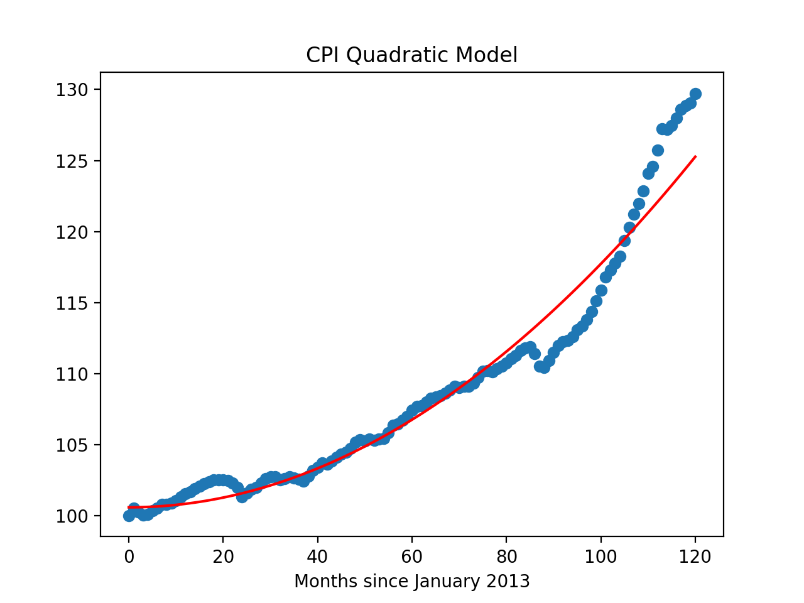

Program 7: Commodity Pricing. Due 10am, Wednesday, 15 March.
This program builds models for economic data from St. Louis Federal Reserve Bank Online Data (FRED).
This program builds models, using polynomial features and regularization for economica data. The pipeline below is general enough to handle actual prices as well as changes over time and price indices. The first steps are importing the data and splitting it into training and testing sets. The training set is then used to determine the degree of the polynomial for the model, and once that is determined, regularization, with cross validation, is used to fit a model that can be validated with the testing data and used for predictions.
The assignment is broken into the following functions to allow for unit testing:
For example, let's use the FRED dataset of the Consumer Price Index, the price of eggs, the price of heating oil, and the price of cars, all indexed to have the same starting value of 100 on January 1, 2013 (fred_cpi_eggs_oil_cars_INDEXED.csv):
Let's try the split data function on the CPI data: Let's fit a polynomial model to the CPI: Let's try the same epsilon for fitting the EGGS model:
Next, let's use cross validation Lasso regularization (the default for our function) to better fit our models for the CPI data: We can see how well this model does with the testing data, as well as predicting for the future: Notes and Hints:
Learning Objective: to build models with polynomial features, employ thresholds to decide model fitness, and use regularization techniques to better fit models.
Available Libraries: pandas, numpy, scikit-learn and core Python 3.6+. The available packages used for scikit-learn: sklearn.model_selection, sklearn.preprocessing, sklearn.linear_model, and sklearn.metrics.
Data Sources: St. Louis Federal Reserve Bank Online Data (FRED).
Sample Datasets:
fred_cpi_eggs_oil_cars_INDEXED.csv: Consumer Price Index, Price of Eggs, Heating Oil, and Cars, over last 10 years, indexed to January 1, 2013
import_data(csv_file):
This function takes one input:
The data in the file is read into a DataFrame, and 3,...) and csv_file: the name of a CSV file time series data for a commodity from FRED.
yes is the USINFO column of your dataset. The xes can be generated by looping through the dataset or using the index as a column (e.g. df.index.to_series()).adds an additional column, based on the index.
The resulting DataFrame is returned.
split_data(df, y_col_name, test_size = 0.25, random_state = 21):
This function takes 4 input parameters:
Returns the data split into 4 subsets, corresponding to those returned by train_test_split:
df: a DataFrame containing with a columns units.y_col_name: the name of the column of the dependent variable.test_size: accepts a float between 0 and 1 and represents the proportion of the data set to use for training. This parameter has a default value of 0.25.random_state: Used as a seed to the randomization. This parameter has a default value of 1870.x_train,
x_test,
y_train, and
y_test. where units is the "x" column and the input parameter, y_col_name is the "y" column.
Note: this is function is very similar to the splitting of data into training and testing sets from Program 6.
fit_poly(xes, yes, epsilon=100, verbose=False):
This function takes four inputs:
It returns the smallest integer degree >= 1 for which the model yields a MSE of less than the specified epsilon and the coefficients as a vector for xes: a DataFrame that
includes the column units.
yes: a series of the same length as xes.
epsilon: the size of the sample. It has a default value of 100.
verbose: when True, prints out the MSE cost for each degree tried (in format: f'MSE cost for deg {deg} poly model: {error:.3f}' for degrees 1, 2, ..., until the error is below epsilon, see example below). It has a default value of False.
df["units"] and df[y_col]. If it does not find a model with an error less than epsilon by degree 5, returns None.
When fitting the linear regression model, the fit_intercept=False.
Hint: see the Chapter 16 for examples of using PolynomialFeatures().
fit_model(xes, yes, poly_deg=2 reg = "lasso"):
This function fits a model with polynomial features using Lasso or Ridge regression with cross validation:
xes: a series of numeric values.
yes: a series of numeric values.
poly_deg: the degree of the polynomial features to be created. It has a default value of 2.
reg: The type of regularization used: ridge or lasso. It has a default value of lasso.
predict_using_trained_model(mod_pkl, poly_xes, yes):
This function takes three inputs:
Computes and returns the mean squared error and r2 score between the values predicted by the model (mod_pkl: a trained model for the data, stored in pickle format.
poly_xes: an array or DataFrame of numeric columns with no null values.
yes: an array or DataFrame of numeric columns with no null values.
mod on x) and the actual values (y).
Note that sklearn.metrics contains two functions that may be of use: mean_squared_error and r2_score.
will print:
csv_file = "fred_cpi_eggs_oil_cars_INDEXED.csv"
df = import_data(csv_file)
print('The DataFrame:')
print(df)
The column names were generated from FRED were rather cryptic, so they have been renamed. Note that all have been normalized to 100 for the date 2013-01-01.
The DataFrame:
DATE CPI EGGS OIL CARS units
0 2013-01-01 100.00000 100.00000 100.00000 100.00000 0
1 2013-02-01 100.54299 101.65546 103.26837 100.30355 1
2 2013-03-01 100.26027 99.58614 95.90818 99.41820 2
3 2013-04-01 100.05093 99.22400 89.38780 99.98735 3
4 2013-05-01 100.09237 96.74082 89.27521 100.44900 4
.. ... ... ... ... ... ...
116 2022-09-01 127.99563 150.12933 106.16784 89.24935 116
117 2022-10-01 128.62063 176.87532 135.68469 99.74704 117
118 2022-11-01 128.88436 185.66994 124.54440 93.91640 118
119 2022-12-01 129.05356 219.86549 95.72411 87.74426 119
120 2023-01-01 129.72086 249.50854 100.54942 102.47897 120
[121 rows x 6 columns]
would print in a sample run:
y_col_name = "CPI"
print(f'For the x column = "units", y_col = {y_col_name}')
print(df[ ["units", y_col_name] ])
x_train_cpi, x_test_cpi, y_train_cpi, y_test_cpi = split_data(df, y_col_name)
print('\nReturned sets of lengths:')
print(f"x_train_cpi: {len(x_train_cpi)}, x_test_cpi: {len(x_test_cpi)}")
print(f"y_train_cpi: {len(y_train_cpi)}, y_test_cpi: {len(y_test_cpi)}")For the x column = "units", y_col = CPI
units CPI
0 0 100.00000
1 1 100.54299
2 2 100.26027
3 3 100.05093
4 4 100.09237
.. ... ...
116 116 127.99563
117 117 128.62063
118 118 128.88436
119 119 129.05356
120 120 129.72086
[121 rows x 2 columns]
Returned sets of lengths:
x_train_cpi: 90, x_test_cpi: 31
y_train_cpi: 90, y_test_cpi: 31
would print in a sample run:
eps = 5
print(f'Finding the poly degree for training data with epsilon = {eps}:')
deg = fit_poly(x_train_cpi.to_frame(),y_train_cpi,epsilon=eps,verbose=True)
print(f'For epsilon = {eps}, poly has degree {deg}.')
We can adjust the sizes of training and testing sets, by using the keyword arguments:
Finding the poly degree for training data with epsilon = 5:
MSE cost for deg 1 poly model: 7.980
MSE cost for deg 2 poly model: 2.511
For epsilon = 5, poly has degree 2.
would print in a sample run:
y_col_name = "EGGS"
print(f'For the x column = "units", y_col = {y_col_name}')
print(df[ ["units", y_col_name] ])
x_train, x_test, y_train, y_test = split_data(df, y_col_name,test_size=0.33)
print('\nReturned sets of lengths:')
print(f"x_train: {len(x_train)}, x_test: {len(x_test)}")
print(f"y_train: {len(y_train)}, y_test: {len(y_test)}")For the x column = "units", y_col = EGGS
units EGGS
0 0 100.00000
1 1 101.65546
2 2 99.58614
3 3 99.22400
4 4 96.74082
.. ... ...
116 116 150.12933
117 117 176.87532
118 118 185.66994
119 119 219.86549
120 120 249.50854
[121 rows x 2 columns]
Returned sets of lengths:
x_train: 81, x_test: 40
y_train: 81, y_test: 40
would print in a sample run:
eps = 5
print(f'Finding the poly degree for training data with epsilon = {eps}:')
deg = fit_poly(x_train.to_frame(),y_train,epsilon=eps,verbose=True)
print(f'For epsilon = {eps}, poly has degree {deg}.')Finding the poly degree for training data with epsilon = 150:
MSE cost for deg 1 poly model: 582.143
MSE cost for deg 2 poly model: 404.864
MSE cost for deg 3 poly model: 212.212
MSE cost for deg 4 poly model: 207.756
MSE cost for deg 5 poly model: 192.272
For epsilon = 5, poly has degree None.
would print in a sample run:
#Working with CPI:
transformer = PolynomialFeatures(degree=2)
x_train_poly = transformer.fit_transform(x_train_cpi.to_frame())
#Fit model to the poly features
#print(x_train_poly)
cpi_pkl = fit_model(x_train_cpi.to_frame(), y_train_cpi)
mod = pickle.loads(cpi_pkl)
print(mod.get_params())
print(x_train_poly)
print(f'model: {mod.predict(x_train_poly)}')model: [115.4081765 100.78877974 103.75105901 105.76705462 104.53105731
116.71103081 100.87106528 103.18877452 107.38533682 123.64873
102.5630616 106.54876721 115.09103434 101.56877805 116.38017439
117.38302935 101.65277786 110.48304436 102.02306277 104.36820053
101.26706442 112.39104021 115.72874723 111.01104321 100.72020846
114.77732073 101.13677899 111.55275632 105.39676972 102.4482047
102.92820366 105.58019789 114.16017922 101.07677912 120.57673669
120.94873588 102.22877661 119.4813105 104.69734267 123.25273086
122.08530483 122.47101828 109.71676032 106.15105379 101.33734998
103.3242028 106.96019489 109.2230471 103.05677481 112.96703896
109.46818943 104.05277264 101.4110641 102.80306107 105.95733992
113.85675131 103.46305964 100.82820823 114.46703569 111.82875572
103.90020154 116.05274653 100.91735089 100.62420867 107.60305063
119.12302556 108.98133334 108.27676345 124.0481577 100.58820875
101.20020742 104.2087723 121.70301995 117.0453158 113.55675196
118.06874214 105.04019906 100.66535144 103.60534504 118.76816919
121.32416363 101.9253487 117.72417146 106.34819622 109.96875977
104.86705658 119.843024 100.58135162 100.96706507 100.5830659 ]
would print in a sample run:
#Predict with the model on training data:
x_test_poly = transformer.fit_transform(x_test_cpi.to_frame())
print('Built model, testing on testing data:')
mse_cpi, r2_cpi = predict_using_trained_model(cpi_pkl, x_test_poly, y_test_cpi)
print(f'The CPI model has a MSE for the testing set of {mse_cpi:2.2} and r2 score of {r2_cpi:2.2}.')
Let's visualize the model (red line) with the full data set:
Built model, testing on testing data:
The CPI model has a MSE for the testing set of 2.8 and r2 score of 0.96.
which shows:

import matplotlib.pyplot as plt
import seaborn as sns
x_poly_all = transformer.fit_transform(df[['units']])
y_predict = mod.predict(x_poly_all)
sns.lineplot(df['units'],y_predict,color='red')
plt.scatter(df['units'],df['CPI'])
plt.title('CPI Quadratic Model')
plt.xlabel('Months since January 2013')
plt.show()
pandas) for your functions and none of the ones for plotting (such as matplotlib.pyplot and seaborn) since the functions submitted are computing and not plotting. Only the libraries listed in Available Libraries are loaded by the autograder.